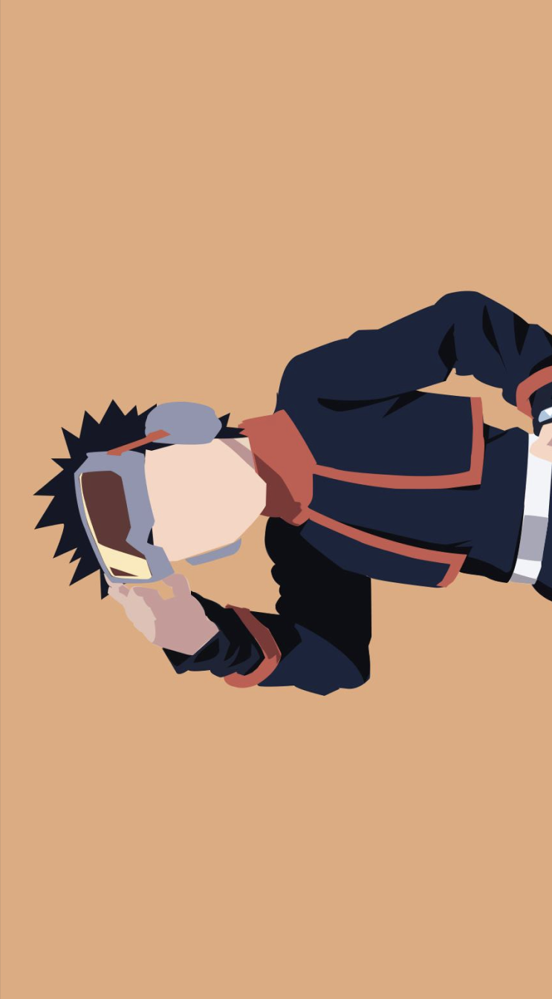

Home
6. Obito
Obito Uchiha is a character whose journey is marked by tragedy, redemption, and a profound exploration of the consequences of pain and loss. Initially introduced as a seemingly insignificant character, Obito's transformation into the formidable antagonist known as "Tobi" and later his redemption arc as Obito challenges the very fabric of the Naruto narrative. The revelation of Obito's backstory, his traumatic experiences, and the manipulation he endures highlight the dark underbelly of the ninja world.
